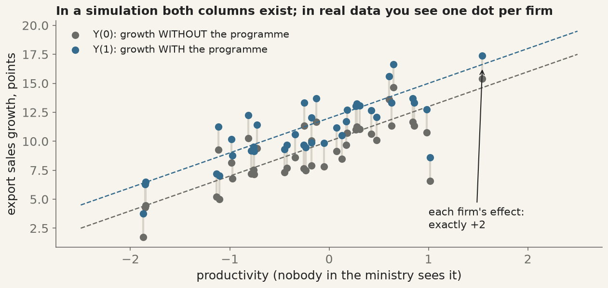
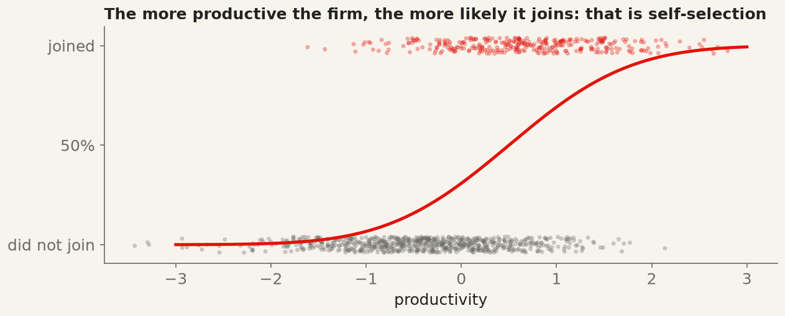
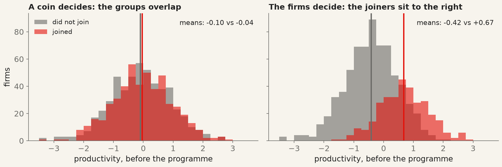
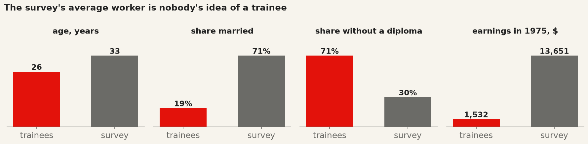
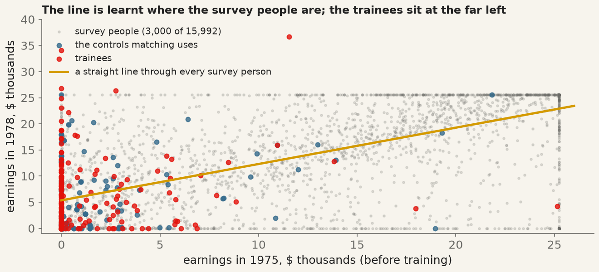
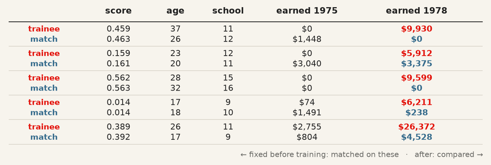
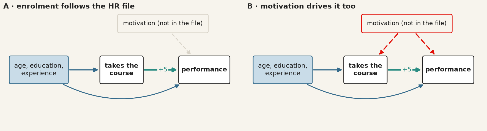
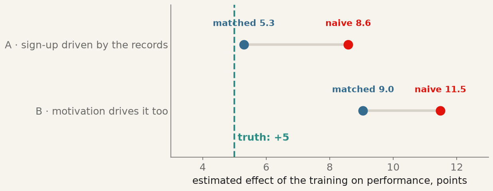
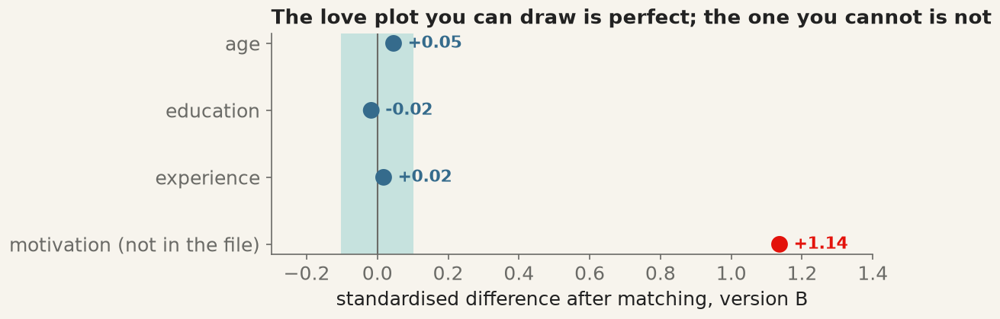
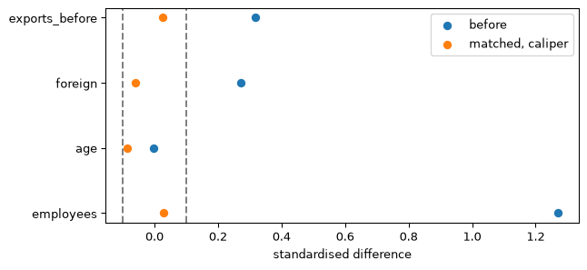

10.1 The question the first nine chapters could not answer
Every method so far has described an association and then, carefully, declined to call it an effect. Chapter 2 insisted on “associated with” rather than “causes”. Chapter 6 showed the same association taking four different values depending on which variation identified it. Chapter 9 produced two models with identical fit and opposite causal arrows.
The reason for all that caution is that the question — did the policy do anything? — is not a question about the data you have. It is a question about data you do not have and cannot get.
This chapter answers it through three examples, each adding one idea. A thousand simulated firms, where both answers are written down and a coin flip can be watched beating self-selection. A real job-training programme, run as a lottery, whose experimental answer lets matching on survey data be checked. And a simulated training scheme in which matching first works and then, with one unmeasured trait added, fails without any warning.
The examples show the two solutions, a randomised trial and propensity-score matching, at work. Two later sections then carry each one out from start to finish on new data, a trial that is designed, drawn and analysed and a match that is built and checked, because knowing why a method works and knowing how to do it are different skills.
David Hume · 1711–1776
Asked what entitles us to say one thing causes another, and did not find a satisfying answer. Neither has anyone since.
Allan Ramsay, 1766. Public domain, via Wikimedia Commons.
From the archive · Hume, 1739
David Hume asked what we actually observe when we say one thing causes another, and answered: contiguity, succession, and constant conjunction. The billiard ball moves; another moves after it; this has always happened. What we never observe is the necessary connection — the thing that would make the second event have to follow.
His second formulation is the one that founded modern causal inference, though it took two centuries to be taken up. A cause, he wrote, is an object followed by another, and where, if the first object had not been, the second never had existed. That subordinate clause is a counterfactual: a statement about a world that did not happen. It cannot be observed, in principle, for the same reason a road not taken has no destination.
Hume treated this as a sceptical problem about knowledge. Modern statistics treats it as a missing data problem, which turns out to be the more productive framing — because missing data can sometimes be recovered, under assumptions you can state, defend and occasionally test.
10.2 Potential outcomes
The framework that formalises Hume’s clause is due to Neyman and, in its modern form, to Rubin (Rubin 1974). For each unit \(i\) define two quantities:
\[
Y_i(1) = \text{the outcome if unit } i \text{ is treated},
\qquad
Y_i(0) = \text{the outcome if it is not}.
\]
Both are properties of the unit, defined whether or not the treatment happens. The causal effect for that unit is the difference
and it is exactly what Hume said we cannot observe: whichever treatment the unit receives, the other potential outcome is missing, permanently and by construction. This is the fundamental problem of causal inference(Holland 1986), and it means that no individual causal effect is ever identified. What we can hope for is an average.
The table you never get to see. Each firm has two potential outcomes; whichever choice it made, the other is missing, and so is its effect. The numbers come from the simulation later in this chapter, where, unusually, both columns exist.
ATE — average treatment effect, \(\mathrm{E}[Y(1) - Y(0)]\) over the whole population. What would happen if everyone were treated versus no one.
ATT — average treatment effect on the treated, \(\mathrm{E}[Y(1) - Y(0) \mid T = 1]\). What the treatment did for those who actually received it. Usually the policy-relevant quantity, and usually not equal to the ATE.
Now the arithmetic that explains why naive comparisons fail. What you can compute from data is the difference in observed means. Add and subtract the same term:
The second term is the difference between the treated and untreated groups in the absence of treatment. If countries that adopt a policy would have differed from those that did not even without it, the observed difference is the effect plus that gap, and nothing in the data separates them.
The decomposition in numbers, from the simulated firms below. The naive comparison says 5.33; the programme’s effect is 2.00; the other 3.33 is how much faster the joining firms would have grown anyway.
10.3 Randomisation, and what it buys
Randomised assignment sets the selection term to zero, and it is worth being precise about why. If treatment is assigned by a coin flip, then \(T\) is independent of everything about the unit — including \(Y(0)\) and \(Y(1)\) — so \(\mathrm{E}[Y(0) \mid T{=}1] = \mathrm{E}[Y(0) \mid T{=}0]\) and the bias term vanishes.
Note what randomisation does not do. It does not make the groups identical; in any finite sample they will differ, sometimes substantially. It makes them differ in a way unrelated to the outcome, so the difference is noise rather than bias — and noise is what standard errors are for. It also balances variables nobody measured or thought of, which is the property no observational method can replicate.
Left: productivity drives both the decision to join and growth, so the comparison runs through a back door. Right: a coin decides, productivity can no longer reach the programme, and the back door is shut.
When randomisation is unavailable, and in international business it usually is — countries are not randomly assigned national strategies — the alternative is to assume something strong enough to recover the same result.
Conditional independence (unconfoundedness, ignorability) — given a set of covariates \(X\), treatment is as good as random: \(\lbrace Y(0), Y(1)\rbrace \perp T \mid X\). Every determinant of both treatment and outcome is in \(X\). This assumption is not testable, because it concerns the missing potential outcome.
Overlap (common support) — for every value of \(X\), the probability of treatment is strictly between 0 and 1. If some countries would never adopt under any circumstances, there is no comparison to be made for them, and an estimate that includes them is extrapolating rather than comparing. Unlike conditional independence, overlap is checkable.
10.4 Example 1 · Did the export programme work?
Everything above can be watched happening in a simulation, which is the one setting where both potential outcomes exist. A thousand firms; a programme that adds exactly two points to every firm’s export growth; and a productivity that nobody in the ministry observes, which raises growth with or without the programme.

Both potential outcomes for forty of the simulated firms. Each firm has two dots, two points apart: that gap is its effect. Both dots rise with productivity, because better firms grow faster whatever they do. Real data show one dot per firm.
Run it: a coin flip against self-selection, with the truth known
import warningswarnings.filterwarnings("ignore")import numpy as npimport pandas as pdimport matplotlib.pyplot as pltimport statsmodels.formula.api as smffrom sklearn.neighbors import NearestNeighborsrng = np.random.default_rng(10)n =1000productivity = rng.normal(0, 1, n)sales_without =10+3* productivity + rng.normal(0, 2, n)sales_with = sales_without +2# the true effect, for every firmapplies = (productivity + rng.normal(0, 1, n) >0.5).astype(int)observed = np.where(applies ==1, sales_with, sales_without)naive = observed[applies ==1].mean() - observed[applies ==0].mean()bias = sales_without[applies ==1].mean() - sales_without[applies ==0].mean()print(f"self-selection naive {naive:.2f} = effect 2.00 + selection bias {bias:.2f}")draws = []for _ inrange(1000): # a thousand randomised experiments coin = rng.integers(0, 2, n) seen = np.where(coin ==1, sales_with, sales_without) draws.append(seen[coin ==1].mean() - seen[coin ==0].mean())print(f"coin flip mean of 1,000 estimates {np.mean(draws):.2f}, spread {np.std(draws):.2f}")
self-selection naive 5.33 = effect 2.00 + selection bias 3.33
coin flip mean of 1,000 estimates 2.00, spread 0.22
The two lines are the chapter’s argument in miniature. Self-selection overstates the effect by a factor of more than two and a half, and the excess is exactly the selection term: the joining firms would have grown 3.33 points faster without the programme. The coin is right on average and wrong in any single draw by about a quarter of a point, which is noise, which a standard error describes. The selection term cannot be computed in real data, since it needs the column nobody sees; what can be computed is how different the groups were before treatment, here about one standard deviation of productivity. That comparison — balance — is the diagnostic the rest of the chapter is built on.

Who chooses to join. The probability of joining rises with productivity, so the joiners (red, top) sit to the right of the non-joiners (grey, bottom): self-selection, in data.

Balance under a coin and under choice. With a coin the two groups have the same productivity before the programme; with choice the joiners were about one standard deviation more productive. The left panel is why randomisation works; the right is why the naive comparison fails.
Example 1 in three sentences. With a coin, the difference in means finds the truth on average. When firms choose, the same difference says 5.33, of which 2 is programme and 3.33 is selection. The selection bias itself is invisible; the imbalance that causes it is not.
10.5 Example 2 · LaLonde’s test
The simulation knows the answer because it wrote it. A real data set that knows the answer is rarer, and the most famous one is a job-training experiment.
The National Supported Work demonstration, run in the United States in 1976–77, assigned disadvantaged workers to a training placement by lottery. The lottery’s estimate of the effect on 1978 earnings is therefore credible. LaLonde (1986) then did something that has shaped the field since: he kept the trainees, threw away the lottery’s controls, replaced them with people from national surveys, and asked whether the estimators economists applied to survey data would recover the experiment’s answer. They did not, and the paper became the standard argument for experiments. Dehejia and Wahba (1999) returned to the same data with propensity-score matching and recovered it, and A. Smith and E. Todd (2005) showed how fragile that recovery is. The data are on Rajeev Dehejia’s page at the NBER (National Bureau of Economic Research), and pd.read_stata reads them directly.
The design. The experiment gives the true effect; the survey version is the situation applied work is usually in.
Run it: the experiment’s answer, and the naive survey comparison
experiment: +1,794 (SE 633)
naive: -8,498
regression: +699 (same eight controls, linear)
standardised differences before matching:
age -0.80
education -0.68
black 2.43
hispanic -0.05
married -1.23
nodegree 0.90
re74 -1.57
re75 -1.75
Training raised 1978 earnings by about $1,800 in the experiment. Against the survey, the naive comparison says it cut them by $8,500: the wrong sign and five times too large, because the survey’s average worker earned $14,000 a year before the programme and the trainees under $2,100. The standardised differences put that in common units — the gap in means divided by the pooled standard deviation — and most are between 0.7 and 2.4, against a convention that calls anything under 0.1 balanced.

Trainees and survey people on four characteristics. The survey’s average worker is older, mostly married, has a diploma and earned nine times as much before the programme.
Regression with all eight characteristics does much better, and is still off by more than half. The reason is worth understanding, because it is what matching fixes. A linear regression uses every survey respondent, including the thousands earning $20,000 and more who resemble no trainee, and lets a straight line carry the comparison from them to the trainees. The estimate depends on that line being right far outside the region where the trainees live.

Earnings in 1978 against 1975. The survey people spread up to the survey’s $25,000 recording cap; the trainees bunch near zero. A regression learns its line from the grey cloud; matching uses only the blue survey people, who look like the trainees.
10.6 The propensity score, and a match that fails its check
Rosenbaum and Rubin (1983) proved that if treatment is as good as random given \(X\), it is as good as random given the single number \(e(X) = P(T = 1 \mid X)\), the propensity score. Eight dimensions collapse to one, and matching becomes the nearest-neighbour problem of chapter 8 on one column.
Matching on the score. Each treated unit is joined to the control with the closest score; controls unlike every treated unit are never used.
Figure 10.1: The propensity score in the two groups, on a logarithmic scale. Almost every survey respondent has a score near zero, but every bin that contains trainees also contains some survey respondents: the overlap needed for matching exists.
score range, trained: 0.001 – 0.487
survey respondents with a score above 0.05: 534
Overlap is the checkable half of the identifying assumptions, and here it holds, barely: of almost sixteen thousand survey respondents, a few hundred look anything like a trainee. That is enough, because matching needs only one good control per trainee.
Run it: match on the first score, then check balance
nn = NearestNeighbors(n_neighbors=1).fit(control[["pscore"]])distance, index = nn.kneighbors(treated[["pscore"]])matched = control.iloc[index.ravel()]print(f"{len(treated)} trainees, {matched.index.nunique()} distinct controls, "f"largest score gap {distance.max():.4f}")print(((treated[X].mean() - matched[X].mean()) / sd).astype(float).round(2).to_string())
185 trainees, 124 distinct controls, largest score gap 0.0038
age 0.31
education 0.00
black 0.05
hispanic 0.07
married 0.09
nodegree 0.00
re74 0.01
re75 0.03
Matching with replacement lets a good control serve more than once, which is why 185 trainees use fewer distinct controls. Balance has improved enormously on earnings, race and schooling, but age is still out by 0.31: the logit has treated the probability of training as moving in one direction with age, and it does not. This is the moment the procedure is designed for. The response is to change the score and check again, and to do it without looking at the outcome, because a score chosen for the estimate it produces is a specification search with a respectable name.
10.7 A score that balances, and only then the outcome
Run it: a better score, the balance check, and the ATT
Figure 10.2: Standardised differences before matching (blue) and after matching on the improved score (orange). The dashed lines mark ±0.1. Every covariate ends inside them.
largest |difference| after matching: 0.09
ATT by matching: +2,001 experiment: +1,794
Age squared lets the probability of training rise and fall with age; the two indicators mark people who earned nothing in 1974 or 1975, which is most trainees and few survey respondents. With them, every standardised difference sits inside 0.1. The figure — a love plot — is the evidence a reader needs, and it is the evidence to report, rather than the logit’s coefficients or fit, which are a means and not an end.
Only now is the outcome looked at. The matched ATT is about $2,000, within a third of a standard error of the experiment.

What a match looks like: five trainees, each above the survey person matched to them. Score, age, schooling and earnings before training are close; earnings after are compared. Single pairs are noisy; only the average over all 185 is the estimate.
Every estimate on one axis. Both matching estimates fall inside the experiment’s 95% interval; the naive comparison has the wrong sign, and the linear regression is pulled down by respondents who resemble no trainee.
Two cautions keep this from being a triumph. The first is uncertainty. The standard error printed by a regression on the matched sample ignores that the score was estimated and that controls were reused; a bootstrap that redoes the whole procedure is the honest version.
Run it: bootstrap the whole matching procedure
estimates = []for b inrange(200): t = treated.sample(len(treated), replace=True, random_state=b) c = control.sample(len(control), replace=True, random_state=1000+ b) nn_b = NearestNeighbors(n_neighbors=1).fit(c[["pscore"]]) _, idx = nn_b.kneighbors(t[["pscore"]]) estimates.append(t["re78"].mean() - c.iloc[idx.ravel()]["re78"].mean())print(f"bootstrap standard error of the ATT: {np.std(estimates):,.0f}")print(f"95% interval: {np.percentile(estimates, 2.5):+,.0f} to {np.percentile(estimates, 97.5):+,.0f}")
bootstrap standard error of the ATT: 900
95% interval: -42 to +3,309
(Strictly the score should be re-estimated inside each replication too; holding it fixed, as here, keeps the cell short and understates the spread a little.) The interval is wide — the matched estimate rests on 185 trainees and a much smaller number of distinct controls — and it comfortably contains the experimental answer. It also, worth saying plainly, reaches zero: on the survey data alone, matching cannot rule out that training did nothing, which the experiment, with its own controls, could.
The second caution is that one success is not a guarantee. LaLonde’s paper used a second survey, the Panel Study of Income Dynamics, and the same procedure there tells a less tidy story.
naive -15,205 ATT +1,665 distinct controls 56
age 0.11
education -0.17
black 0.11
hispanic -0.03
married 0.09
nodegree 0.21
re74 0.03
re75 0.01
The estimate is again close to the experiment, but balance is not achieved: four covariates stay outside 0.1, schooling and the no-diploma indicator by the most, and the whole match rests on a few dozen distinct controls. A careful analyst would report that, and would not present the closeness of the number as vindication, because in real work there is no experiment to compare with. A. Smith and E. Todd (2005) make the general point: the Dehejia–Wahba success depends on which subsample and which score, and the lesson is about the conditions under which matching works — rich pre-treatment earnings, comparison groups from the same labour market — rather than about matching as such.
Example 2 in three sentences. The experiment says training raised 1978 earnings by about $1,800; against survey controls, the naive comparison says −$8,500. A propensity score, an overlap check and a balance check, all settled before the outcome is seen, bring matching to about $2,000, while a linear regression on the same variables misses by more than half. It worked because two years of pre-programme earnings capture most of what decided who enrolled.
10.8 The control that changes the question
Deciding what goes into the score is a claim about causal structure. The rule is to condition only on variables fixed before treatment, and the reason is clearest when it is broken.
A confounder, measured before treatment, opens a back door and should be controlled for. A mediator, created by the treatment, carries part of the effect, and controlling for it removes that part.
Run it: controlling for a mediator
rng = np.random.default_rng(10)size = rng.normal(0, 1, n) # before the programmejoins = (size + rng.normal(0, 1, n) >0.5).astype(int)contracts =1.5* joins + rng.normal(0, 1, n) # created by the programmegrowth =10+2* size +0.5* joins +1.0* contracts + rng.normal(0, 2, n)firms = pd.DataFrame({"size": size, "joins": joins, "contracts": contracts, "growth": growth})for formula in ["growth ~ joins", "growth ~ joins + size", "growth ~ joins + size + contracts"]:print(f"{formula:36}{smf.ols(formula, data=firms).fit().params['joins']:.2f}")print("true total effect: 0.5 direct + 1.5 × 1.0 through contracts = 2.0")
Without controls, selection on size inflates the estimate. Controlling for size — a confounder, fixed before the programme — recovers the total effect of 2. Adding new export contracts, which the programme itself creates, drops the estimate to the direct effect alone, because conditioning on a mediator holds fixed the channel through which most of the effect travels. The regression is not wrong; it answers a different and usually uninteresting question. The related case of a collider, a common consequence of treatment and outcome, is worse: conditioning on it creates an association that does not exist (Elwert and Winship 2014). Cinelli, Forney, and Pearl (2022) is the short guide worth keeping beside the keyboard.
“Closer to the right answer” is not the same as “the right method.” In real work the truth is unknown, so the only evidence available is whether the procedure is justified. A procedure that is wrong for a reason you can state will be wrong by an unknown amount in the next dataset, and no diagnostic will announce it.
10.9 Example 3 · Does analytics training raise performance?
Matching came within $210 of the experiment on the CPS, the Current Population Survey. The third example shows why that is not the same as solving the problem, in a setting from the human-resources side of international business. A large organisation offers its employees an advanced data-analytics course; taking it is voluntary; the human-resources (HR) analytics team wants to know whether it raises a standardised annual performance score. The HR file records age, education and experience. It does not record motivation.
The data are simulated, 800 employees, so the truth is known: the course adds 5 points to everyone. Older and more educated employees are more likely to enrol. In version A that is all that drives enrolment. In version B motivated employees also enrol more, and motivation raises performance on its own. The same matching procedure — a logit score on the three recorded variables, one nearest neighbour, a balance check — is applied to both.

Who enrols. In A, everything that decides enrolment is in the HR file; in B, motivation, which the file does not record, also decides it and raises performance on its own.
Run it: the same matching, with and without an unmeasured confounder
version A: naive 8.58 matched 5.29 (truth 5)
standardised differences after matching: {'age': 0.04, 'education': -0.04, 'experience': 0.06, 'motivation': 0.14}
version B: naive 11.48 matched 9.05 (truth 5)
standardised differences after matching: {'age': 0.05, 'education': -0.02, 'experience': 0.02, 'motivation': 1.14}

The same procedure on the two versions. In A, matching moves the estimate from 8.6 to 5.3, close to the truth; in B it stops at 9.0.
In version A, matching does what it did on LaLonde’s data: the naive comparison says 8.6 and the matched estimate 5.3. In version B, the same steps produce the same reassuring balance table and an estimate of 9.0, nearly double the truth. The reason is in the last column of the balance check, the one the analyst cannot compute.

Balance after matching in version B. The three recorded variables are inside ±0.1; motivation, which is not in the file, is off by more than a standard deviation.
Balance can only be checked on what was measured, and conditional independence is a claim about everything else. On LaLonde’s data, matching worked because the survey records two years of earnings before the programme, which capture most of what decided who enrolled. Here nothing in the file captures motivation, and no score built from the file can recover the experiment that was never run.
Example 3 in three sentences. When enrolment depends on what the HR file records, matching recovers the course’s effect. When motivation also drives it, matching still balances everything in the file and still reports a number, nearly double the truth. The difference between the two versions is invisible in the data; it is an argument about who enrols and why.
10.10 Matching or regression?
Matching and regression adjustment are the same assumption in different clothing: both require that conditioning on the observed covariates suffices. They differ in how they use it.
Regression on the confounders
Matching on the propensity score
Comparison
every treated unit against a line fitted through all controls
each treated unit against the controls most like it
Overlap
not checked; extrapolates where no comparable control exists
visible in the score’s distribution
Functional form
must be right — linear unless specified otherwise
needs only a score that balances
Order of work
the outcome sits in the same model as the controls
the design is fixed, by balance, before the outcome is seen
In this chapter
LaLonde: +$699
LaLonde: +$2,001 (experiment +$1,794)
When overlap is good and the relations are close to linear, the two agree: in version A of Example 3 a regression on the three recorded variables gives about 4.6. When overlap is poor, as with LaLonde’s survey, regression’s line carries the comparison into regions with no trainees and matching is the safer device. When the assumption itself fails, as in version B, neither helps, and both fail in the same direction.
10.11 One problem, two solutions
The three examples showed one problem from three sides: the treated and the untreated differed before the treatment, so the difference in their outcomes mixes the effect with selection. There are two ways out of it, and they are different kinds of thing.
Randomised controlled trial
Propensity-score matching
When
you decide who is treated, before it happens
treatment has already been chosen by the units
The idea
chance picks the treated, so nothing about a unit can influence the draw
for each treated unit, find untreated units that were as likely to be treated
Why selection goes
the groups are alike on everything, measured or not
the groups are alike on what was measured
What is assumed
that the draw was respected
that nothing unmeasured drives both treatment and outcome
What is checked
balance, as a check of the draw
overlap, then balance, as a check of the match
The estimate
a difference in means
treated mean minus matched-control mean, the ATT
A trial solves the problem by design, matching by assumption. The first is to be preferred whenever it is available; the second exists for the many questions where nobody will let you draw. The examples showed both working. The next two sections show both being done, from the first file to the reported number, on data that appear nowhere else in the chapter, because the order of the steps is most of the method and it is easier to see on a clean case.
10.12 Doing it · A trial, from the baseline file to the estimate
An export agency can place foreign orders with 200 of the 400 small workshops that applied for them. Does receiving export orders raise a workshop’s monthly profit? This is the design of Atkin, Khandelwal, and Osman (2017), who had export orders offered to a randomly chosen subset of small rug producers in Egypt. The data here are simulated, so that the true effect, $150 a month, is known.
A trial has six steps, and four of them happen before any outcome exists.
Step 1 · The baseline file. Everything known about the applicants before anyone is treated. It is used three times: to draw within sectors, to check the draw, and to make the estimate more precise.
Step 2 · Power. A trial too small to detect the effect it is looking for is wasted, and the sample size cannot be changed afterwards. Power is the probability of detecting an effect that is really there. It depends on the effect measured in standard deviations of the outcome, here 150 against a standard deviation of about 500, on the sample in each group, and on the significance level; fix any three and the fourth follows.
Run it: the baseline file, and whether 400 firms are enough
from statsmodels.stats.power import TTestIndPowerrng = np.random.default_rng(10)n_firms =400workshops = pd.DataFrame({"firm": np.arange(1, n_firms +1),"sector": rng.choice(["rugs", "garments", "ceramics"], n_firms),"employees": rng.integers(2, 40, n_firms),"profit_before": rng.gamma(4, 250, n_firms).round()}) # dollars a monthprint(workshops["profit_before"].describe().round(0)[["mean", "std"]].to_string())power = TTestIndPower()effect_size =150/500print(f"\nfirms needed per group for 80% power: "f"{power.solve_power(effect_size=effect_size, alpha=0.05, power=0.80):.0f}")print(f"power with 200 per group: "f"{power.solve_power(effect_size=effect_size, nobs1=200, alpha=0.05):.2f}")smallest = power.solve_power(nobs1=200, alpha=0.05, power=0.80)print(f"smallest effect 200 per group detects: {smallest:.2f} sd = {smallest *500:.0f} dollars")
mean 1011.0
std 509.0
firms needed per group for 80% power: 175
power with 200 per group: 0.85
smallest effect 200 per group detects: 0.28 sd = 140 dollars
Two hundred firms a group is enough, with a little to spare: 175 would give the conventional 80%, and 200 give 85%. The last line is the one to take to whoever funds the trial. An effect smaller than about $140 would probably go undetected, and a true effect of $75 would need some 700 firms a group.
Step 3 · The draw. Chance picks the treated, once, with a seed written down so that anyone can redo it. Shuffling the list and treating the first half gives two groups of exactly equal size. Doing so within each sector, stratifying, guarantees that every sector is split evenly, which a single shuffle achieves only on average.
Step 4 · The balance check. The same standardised differences as in Example 2, with a different status. After matching, balance is the only evidence the comparison is fair. After a draw it is a check that the draw was carried out as a draw: the groups are known to be comparable in expectation, on everything, and the table confirms that nothing went wrong in the field.
Run it: draw half of each sector, then check the draw
rng = np.random.default_rng(2026) # write the seed down: anyone can redo the drawdef half(group): # shuffle one sector, treat the first halfreturn rng.permutation(len(group)) <len(group) //2workshops["treat"] = workshops.groupby("sector")["firm"].transform(half).astype(int)print(pd.crosstab(workshops["sector"], workshops["treat"]))base = ["employees", "profit_before"]drawn, not_drawn = workshops[workshops["treat"] ==1], workshops[workshops["treat"] ==0]sd_w = np.sqrt((drawn[base].var() + not_drawn[base].var()) /2)print("\nstandardised differences at baseline:")print(((drawn[base].mean() - not_drawn[base].mean()) / sd_w).round(2).to_string())joint = smf.ols("treat ~ employees + profit_before + C(sector)", data=workshops).fit()print(f"do the characteristics predict the draw? p = {joint.f_pvalue:.2f}")
treat 0 1
sector
ceramics 69 69
garments 65 65
rugs 66 66
standardised differences at baseline:
employees -0.06
profit_before 0.07
do the characteristics predict the draw? p = 0.92
Both differences are inside 0.1, and a regression of the draw on every baseline characteristic at once finds nothing to explain, as it should when a shuffle decided. One rule matters more than the code: one draw, saved. Redrawing until the groups “look right” is choosing the treated yourself, by another name.
Step 5 · The estimate. When the follow-up survey arrives, the effect is the difference in mean outcomes between the two groups. A regression of the outcome on the treatment indicator computes exactly that difference and adds its standard error and confidence interval.
Run it: the difference in means, then the same with baseline controls
rng = np.random.default_rng(11) # stands in for the follow-up survey; true effect +150workshops["profit_after"] = (300+0.8* workshops["profit_before"] +150* workshops["treat"]+ rng.normal(0, 300, n_firms)).round()simple = smf.ols("profit_after ~ treat", data=workshops).fit(cov_type="HC2")adjusted = smf.ols("profit_after ~ treat + profit_before + employees + C(sector)", data=workshops).fit(cov_type="HC2")for name, fit in [("difference in means", simple), ("with baseline controls", adjusted)]: low, high = fit.conf_int().loc["treat"]print(f"{name:23s}{fit.params['treat']:5.0f} se {fit.bse['treat']:3.0f} "f"95% CI [{low:.0f}, {high:.0f}]")
difference in means 167 se 51 95% CI [68, 266]
with baseline controls 135 se 29 95% CI [78, 192]
The difference in means is $167, with an interval from 68 to 266 that contains the truth and excludes zero. Adding the baseline variables gives $135 and an interval a little more than half as wide. The controls are not there to remove bias, which the draw already did; they absorb variation in the outcome that has nothing to do with the treatment, so what is left is measured more precisely. This is the one place in the chapter where adding controls is safe by construction, provided they were measured before the draw.
Step 6 · Firms that refuse. In the field, some of the firms drawn will decline the orders. Suppose the stronger ones accept. Taking the orders is then a choice again, and comparing the takers with everyone else brings back precisely the selection the draw was meant to remove.
Run it: compare by the draw, not by who took the treatment
rng = np.random.default_rng(11)ready = workshops["profit_before"] + rng.normal(0, 400, n_firms) >800# stronger firms acceptfield = workshops.assign(took_up=((workshops["treat"] ==1) & ready).astype(int))field["profit_after"] = (300+0.8* field["profit_before"] +150* field["took_up"]+ rng.normal(0, 300, n_firms)).round()share = field.loc[field["treat"] ==1, "took_up"].mean()offered = smf.ols("profit_after ~ treat", data=field).fit().params["treat"]took = smf.ols("profit_after ~ took_up", data=field).fit().params["took_up"]print(f"share of drawn firms that took the orders: {share:.2f}")print(f"by who took the orders (selection is back): {took:5.0f}")print(f"by the draw (effect of being offered): {offered:5.0f}")print(f"draw effect / share (effect of taking): {offered / share:5.0f} truth 150")
share of drawn firms that took the orders: 0.62
by who took the orders (selection is back): 468
by the draw (effect of being offered): 109
draw effect / share (effect of taking): 175 truth 150
Comparing by who took the orders says $468, three times the truth. Comparing by the draw says $109: the effect of being offered the orders, the intention-to-treat effect, which is smaller than 150 because 38% of the firms offered them took nothing. It is an honest answer to a slightly different question, and often the one a policy-maker needs, since a programme can only offer. Dividing it by the take-up share gives $175, an estimate of the effect on the firms that took the orders. That division is an instrumental-variables estimate with the draw as the instrument (Angrist, Imbens, and Rubin 1996), and chapter 11 returns to it.
The trial in three sentences. Size it before it starts, draw once with a seed, and check the draw on the baseline file. The estimate is a difference in means with an interval, made more precise, not less biased, by baseline controls. Whatever happens in the field, compare by the draw.
10.13 Doing it · A match, from the score to the interval
Of 4,000 manufacturing firms, some chose to obtain a quality certification (ISO 9001). Does certification raise export sales two years later? Nobody drew anything: larger, foreign-owned and already-exporting firms certify more often. The data are simulated again, so the true effect, 8 ($ thousand), is known, and so is something no real analyst knows: that only the four recorded variables drive the choice. The assumption therefore holds by construction, and what follows is about carrying the method out. Example 3 was about the assumption failing.
Run it: 4,000 firms that chose for themselves, and the naive answer
The naive answer is 18.3, more than twice the truth, and the other columns say why: the certified firms were nearly three times as large, more often foreign-owned, and exported more before certifying.
Step 1 · The list. Which pre-treatment variables drive the choice? The list is the identifying assumption, written down. It is made on paper, from knowledge of how firms decide, and every variable on it must have been fixed before certification.
Steps 2 and 3 · The score, and overlap. A logit of the treatment on the list gives each firm its probability of certifying. The first thing to do with it is to look at where the two groups’ scores lie.
Figure 10.3: The propensity score among certified and uncertified firms, on a logarithmic scale. The two overlap over almost the whole range. At the far right there are certified firms and almost no uncertified ones: very large firms nearly all certify, so there is nobody to compare them with.
Step 4 · The match, within a caliper. Each certified firm is given the uncertified firm with the closest score. Left at that, every treated firm gets a match, however far away it is. A caliper sets a limit on “close”: a common choice is a fifth of a standard deviation of the logit of the score, the logit being used because it spreads out the scores near 0 and 1. A treated firm with no control inside the caliper is set aside rather than badly matched.
Run it: nearest neighbour within a caliper
nn = NearestNeighbors(n_neighbors=1).fit(not_got[["logit"]])distance, index = nn.kneighbors(got[["logit"]])keep = distance.ravel() <=0.2* cert["logit"].std()kept, partners = got[keep], not_got.iloc[index.ravel()[keep]]print(f"certified firms: {len(got)} matched: {keep.sum()} set aside: {(~keep).sum()}")print(f"different controls used: {partners.index.nunique()}")print(f"employees, matched firms: {kept['employees'].mean():.0f} "f"set-aside firms: {got[~keep]['employees'].mean():.0f}")
certified firms: 827 matched: 810 set aside: 17
different controls used: 387
employees, matched firms: 87 set-aside firms: 313
Seventeen firms are set aside, and they are not a random seventeen: they average 313 employees against 87 for the rest. Setting them aside changes what is estimated, and that has to be said. The estimate is now the effect of certification on certified firms that have a comparable uncertified firm, which here means all but the very largest. Nothing in these data can say what certification did for those.
Step 5 · Balance, before the outcome.
Run it: balance before matching, without the caliper, and within it
before no caliper caliper
employees 1.27 0.12 0.03
age -0.00 -0.08 -0.09
foreign 0.27 -0.09 -0.06
exports_before 0.32 -0.02 0.03

Figure 10.4: Standardised differences before matching (blue) and after matching within the caliper (orange). The dashed lines mark ±0.1. Firm size starts 1.27 standard deviations apart and ends at 0.03.
Without the caliper, firm size is still out by 0.12, because the largest certified firms were matched to much smaller ones. Within it, every difference is inside 0.1. Had one stayed outside, the response would be the one from Example 2: change the score, with a square, a logarithm or an interaction, or tighten the caliper, and check again. The outcome column has not been touched yet, and that is the discipline that makes the next number worth reading.
Step 6 · The ATT, and how sure you are. The estimate is the mean outcome of the matched certified firms minus that of their partners. For its uncertainty, the whole procedure is wrapped in a function, so that it can be rerun from the score onwards on each of 200 resampled data sets.
Run it: the ATT, a bootstrap of the whole procedure, and other choices
def att(data, neighbours=1, caliper=0.2): p = smf.logit(SCORE, data=data).fit(disp=0).predict(data) data = data.assign(logit=np.log(p / (1- p))) t, c = data[data["certified"] ==1], data[data["certified"] ==0] d, i = NearestNeighbors(n_neighbors=neighbours).fit(c[["logit"]]).kneighbors(t[["logit"]]) ok = d[:, 0] <= caliper * data["logit"].std()return t[ok]["exports_after"].mean() - c.iloc[i[ok].ravel()]["exports_after"].mean()draws = [att(cert.sample(len(cert), replace=True, random_state=b)) for b inrange(200)]low, high = np.percentile(draws, [2.5, 97.5])print(f"ATT (matching): {att(cert):5.1f} truth 8")print(f"bootstrap 95% CI: [{low:.1f}, {high:.1f}] se {np.std(draws):.1f}")ols = smf.ols("exports_after ~ certified + np.log(employees) + age + foreign + exports_before", data=cert).fit()print(f"\n1 neighbour, caliper 0.1: {att(cert, caliper=0.1):5.1f}")print(f"1 neighbour, no caliper: {att(cert, caliper=np.inf):5.1f}")print(f"5 neighbours, caliper 0.2: {att(cert, neighbours=5):5.1f}")print(f"regression, same variables: {ols.params['certified']:5.1f}")
ATT (matching): 7.7 truth 8
bootstrap 95% CI: [5.2, 11.3] se 1.7
1 neighbour, caliper 0.1: 8.2
1 neighbour, no caliper: 7.0
5 neighbours, caliper 0.2: 8.8
regression, same variables: 8.0
Matching says 7.7 against a truth of 8 and a naive 18.3. Unlike the bootstrap in Example 2, this one re-estimates the score inside every replication, which is what the function is for. The interval, 5.2 to 11.3, is wide for 810 matched firms: one nearest neighbour, drawn with replacement from 387 distinct controls, is a noisy device. It should be reported as approximate, since the bootstrap is known to be imperfect for nearest-neighbour matching, and as a guide to precision it is far better than the standard error of a regression run on the matched sample.
Step 7 · Other reasonable choices. The last four lines redo the estimate under choices another analyst could defend equally well: a tighter caliper, none, five neighbours, and a regression on the same variables. They range from 7.0 to 8.8, all inside the interval. That is what a result which does not hang on one decision looks like, and the table belongs in the report beside the main estimate. It is not a test of the assumption. A characteristic of the firms that was never recorded would move every line together, exactly as motivation did in Example 3, and no line would show it.
The match in three sentences. Write down the list of pre-treatment variables, estimate the score, and look at overlap before anything else. Match within a caliper, say who was set aside, and settle balance before the outcome is read. Report the ATT with an interval from a bootstrap of the whole procedure, and beside it the estimates under other defensible choices.
10.14 What none of this fixes
The failure in Example 3 cannot be diagnosed from the data, so the honest response is to ask how wrong the assumption could be. Sensitivity analysis asks how strong an unobserved confounder would have to be — how strongly associated with both treatment and outcome — to overturn the conclusion. If the answer is “about as strong as the covariates already controlled for”, the finding is fragile. If it is “stronger than any known determinant”, it is robust. Either way the reader learns something a point estimate does not tell them.
One caution about the method itself. Propensity-score matching is the most popular approach here and not the best one: matching on a scalar score discards information and can increase imbalance as the caliper tightens, a pathology documented at length by King and Nielsen (2019). Matching directly on the covariates, or weighting rather than matching, generally does better. The score remains a good diagnostic for overlap even where it is a poor matching device.
Chapter 11 takes the other route: rather than assuming the confounders are all observed, it uses the structure of when treatment arrived to difference the unobserved ones away.
10.15 A short review of the literature
The potential-outcomes notation is Rubin (1974), though the idea traces to Neyman’s 1923 work on agricultural experiments. Holland (1986) named the fundamental problem and drew the boundary the discipline still uses — “no causation without manipulation” — which remains contested and clarifying.
Atkin, Khandelwal, and Osman (2017) is the trial this chapter’s worked example imitates: export orders offered to a randomly chosen subset of small rug producers, so that the effect of exporting on the firm can be read from a difference in means. When some of those drawn do not take the treatment, the draw can serve as an instrument for it, and Angrist, Imbens, and Rubin (1996) is the paper that says what that estimates.
LaLonde’s 1986 comparison of experimental and non-experimental estimates of a job-training programme is the benchmark the matching literature is still judged against; Dehejia and Wahba (1999) showed propensity-score matching recovering the experimental answer, and A. Smith and E. Todd (2005) showed how much that depends on the sample and the specification.
Rosenbaum and Rubin (1983) proved the result that made observational adjustment tractable: if treatment is unconfounded given a covariate vector, it is unconfounded given the scalar propensity score alone, so a many-dimensional matching problem collapses to one dimension. Imbens (2004) surveys the estimators that followed and Stuart (2010) is the practical review, covering matching, weighting and the diagnostics that should accompany them.
The corrective literature is as important as the constructive one. King and Nielsen (2019) argues that propensity-score matching specifically — as opposed to matching in general — often increases imbalance and should be replaced by methods that match on covariates directly. Elwert and Winship (2014) sets out endogenous selection bias, the family of errors created by conditioning on colliders, and Cinelli, Forney, and Pearl (2022) gives the compact treatment of which controls help and which do damage.
10.16 What to report
For a trial
How the draw was made. The unit, the strata, the seed, and that it was made once.
The sample size and the power it gave for the effect that was expected, computed before the trial.
Balance at baseline, as standardised differences.
The difference in means with its confidence interval, and the estimate with baseline controls beside it.
Who dropped out or refused, and that the comparison is by the draw.
For a match
The estimand, named. ATE or ATT — they answer different questions and matching usually estimates the second. If a caliper set units aside, say which treated units the estimate now describes.
The identifying assumption, in words. Which variables are claimed to close every path from treatment to outcome, and why that list is complete. This is an argument, not a table.
Balance before and after, for every covariate, with standardised differences — a love plot. Not the propensity model’s coefficients or its fit. And say that the score was settled before the outcome was looked at.
Overlap, with the range of the score in both groups, and how many units were outside common support or set aside by the caliper.
The naive estimate alongside the adjusted one. The distance between them is the size of the selection problem, and hiding it hides the reason for the analysis.
The ATT with an interval, from a bootstrap of the whole procedure, and the estimates under other defensible choices beside it.
A sensitivity analysis. How strong an unobserved confounder would need to be to overturn the result.
That every control is pre-treatment, and that you know it. If a covariate is measured after treatment, say why it is not a mediator or a collider — and if you cannot, drop it, even when it improves the number.
A. Smith, Jeffrey, and Petra E. Todd. 2005. “Does Matching Overcome LaLonde’s Critique of Nonexperimental Estimators?”Journal of Econometrics 125 (1-2): 305–53. https://doi.org/10.1016/j.jeconom.2004.04.011.
Angrist, Joshua D., Guido W. Imbens, and Donald B. Rubin. 1996. “Identification of CausalEffectsUsingInstrumentalVariables.”Journal of the AmericanStatisticalAssociation 91 (434): 444–55. https://doi.org/10.1080/01621459.1996.10476902.
Atkin, David, Amit K. Khandelwal, and Adam Osman. 2017. “Exporting and FirmPerformance: Evidence from a RandomizedExperiment*.”TheQuarterlyJournal of Economics 132 (2): 551–615. https://doi.org/10.1093/qje/qjx002.
Cinelli, Carlos, Andrew Forney, and Judea Pearl. 2022. “A CrashCourse in Good and BadControls.”SociologicalMethods & Research 53 (3): 1071–1104. https://doi.org/10.1177/00491241221099552.
Dehejia, Rajeev H., and Sadek Wahba. 1999. “CausalEffects in NonexperimentalStudies: Reevaluating the Evaluation of TrainingPrograms.”Journal of the AmericanStatisticalAssociation 94 (448): 1053–62. https://doi.org/10.1080/01621459.1999.10473858.
Elwert, Felix, and Christopher Winship. 2014. “EndogenousSelectionBias: TheProblem of Conditioning on a ColliderVariable.”AnnualReview of Sociology 40 (1): 31–53. https://doi.org/10.1146/annurev-soc-071913-043455.
Imbens, Guido W. 2004. “NonparametricEstimation of AverageTreatmentEffectsUnderExogeneity: A Review.”Review of Economics and Statistics 86 (1): 4–29. https://doi.org/10.1162/003465304323023651.
King, Gary, and Richard Nielsen. 2019. “WhyPropensityScoresShouldNotBeUsed for Matching.”PoliticalAnalysis 27 (4): 435–54. https://doi.org/10.1017/pan.2019.11.
Rosenbaum, PAUL R., and DONALD B. Rubin. 1983. “The Central Role of the Propensity Score in Observational Studies for Causal Effects.”Biometrika 70 (1): 41–55. https://doi.org/10.1093/biomet/70.1.41.
Rubin, Donald B. 1974. “Estimating Causal Effects of Treatments in Randomized and Nonrandomized Studies.”Journal of EducationalPsychology 66 (5): 688–701. https://doi.org/10.1037/h0037350.
Stuart, Elizabeth A. 2010. “MatchingMethods for CausalInference: A Review and a LookForward.”StatisticalScience 25 (1): 1–21. https://doi.org/10.1214/09-STS313.